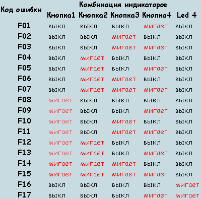

| Диагностика и вызов мастера (оплачивается только в случае отказа от ремонта) 150 грн | ||
|---|---|---|
| СЧИТЫВАНИЕ ОШИБОК СТИРАЛЬНОЙ МАШИНЫ ИНДЕЗИТ С ЭЛЕКТРОННЫМ МОДУЛЕМ EVO-II | ||
| Здесь ошибка выводится комбинацией светодиодов кнопок дополнительных функций .Смотрим сочетание, сверяем с таблицей и получаем код неиспаравности . | ||
| СЧИТЫВАНИЕ ОШИБОК СТИРАЛЬНОЙ МАШИНЫ ИНДЕЗИТ СЕРИИ LOW END . Особенность этой машины состоит в том что здесь силовой и дисплейный модуль соеденины в одно единое целое и находятся в верхней панели | ||
| С помощью таблицы определяем ошибку на стиральной машине . | ||
| СЧИТЫВАНИЕ ОШИБОК СТИРАЛЬНОЙ МАШИНЫ ИНДЕЗИТ С МОДУЛЕМ АРКАДИЯ | ||
| Смотрим какие кнопки мигают и сверяем комбинацию с таблицей . | ||
| РАСШИФРОВКА КОДОВ ОШИБОК СТИРАЛЬНЫХ МАШИН ИНДЕЗИТ . Здесь мы расскажем что значит каждая из ошибок стиральной машины Попытаемся это сделать простым языком, без технических терминов, чтобы это было понятно простому обывателю не имеющему никакого отношения к ремонту стиральных машин . | Ошибка | |
| Замыкание в теристоре управления двигателя . Ошибка говорит о том что отсутствует вращение двигателя .Cледовательно смотрим щетки, обмотки двигателя и тахо датчик .Кроме всего причиной возникновения данного кода может быть неисправность и в самом электронном модуле . | F-01 | |
| Блокировка вращения двигателя, либо разрыв обмоток таходатчик .Ошибка аналогичная первой, говорит лишь о том что стиралка не вращает барабан .Проверяем двигатель, электронный модуль . | F-02 | |
| Обрыв в цепи датчика который контролирует температуру воды или неисправно реле включения электро нагревателя (ТЭН) .Датчик температуры как правило редко выходит из строя, его легко проверить замерив сопротивление .Чаще всего ремонт и ли замена требуется электронному модулю . | F-03 | |
| Одновременное поступление сигнала что бак пустой и переполнен .Неисправность прессостата ( датчика который контролирует уровень воды в баке) или электронного модуля . | F-04 | |
| Стиралка не может слить воду .Причины как правило кроются в засоре , фильтра, каналов слива воды, шлангах .Кроме этого может быть неисправен сливной насос, в этом случае требуется его замена . | F-05 | |
| Нет нагрева воды !Проверить необходима электрический нагреватель, его цепь, электронный модуль . | F-07 | |
| Залипло реле ТЭНа или неисправен датчик уровня .На практике же как правило эта ошибка появляется при дефекте электрического нагревателя, его следует заменить . | F-08 | |
| Сбой программы в электронном модуле .Производитель советует отключить машина от электро питания и включить подождав две минуты .После чего электронный модуль перезагрузится и стирка заработает .На практике это редко помогает, требуется ремонт электронного модуля . | F-09 | |
| Электронный блок не видит сигнала о том что бак пустой и о том что он полный .как правило этот код говорит о неисправности прессостата .Они ломаются и требуют замены, как механические, так и аналоговые . | F-10 | |
| Нарушена обмотка сливного насоса, требуется его замена ! | F-11 | |
| Модуль индикации (это плата которая показывает Вам что происходит с машиной, стирает, отжимает и тд, также на ней находится дисплей и кнопки управления ) и силовой модуль (плата котрая управляет всеми процессами в машине ) не видят друг друга .На практике как правило неисправен силовой блок, в редких случаях дисплейный . | F-12 | |
| Нарушения в цепи, электронный модуль «не видит» датчик температуры который контролирует температуру воздуха в сушке .Либо неисправен вентилятор сушки (служит для принудительной подачи воздуха в режиме сушки) . | F-13 | |
| Не работает, не потребляет электричество электро нагреватель сушки . | F-14 | |
| залипло, неисправно реле включения нагревательного элемента сушки . | F-15 | |
| Только для машин с вертикальной загрузкой !Не работает устройства которое фиксирует подвижность барабана . | F-16 | |
| Дефект устройства блокировки люка (только для стиральных машин с функцией «легкая дверь») | F-17 |
| Диагностика и вызов мастера (оплачивается только в случае отказа от ремонта) 150 грн | ||
|---|---|---|
| Indesit W 104 T EX-25x47x10 203-204 | ||
| Indesit W 105 TX EX-25x47/64x7/10.5-203-204 | ||
| Indesit W 43T EX-25x47x10 203-204 | ||
| Indesit W 43T EX-22x40x8/11.5 202-203 | ||
| Indesit W 63 T-25x47x10 203-204 | ||
| Indesit W 63 T-22x40x8/11.5 202-203 | ||
| Indesit W 63T EX-25x47x10 203-204 | ||
| Indesit W 83 TK-25x47x10 203-204 | ||
| Indesit W 83 TЕХ-25x47x10 203-204 | ||
| Indesit WE 8 X EX-25x47/64x7/10.5 203-204 | ||
| Indesit W81 EX-25x47x10 203-204 | ||
| Indesit W 84T X EX-25x47x10 203-204 | ||
| Indesit W 84T X EX BG-25x53.5x10/14 203-204 | ||
| Indesit W 93 T EX-25x47x10 203-204 | ||
| Indesit W 101-25x47x10 203-204 | ||
| Indesit W 104 T EX-25x47x10 203-204 | ||
| Indesit W 105T XR BG-30x53.5x10/14 204-205 | ||
| Indesit W 105Т Х ЕX-25x47/64x7/10.5 203-204 | ||
| Indesit W 125T X EX-35x52/65x7/10 204-205 | ||
| Indesit W 125T X-35x62/75x7/10 205-206 | ||
| Indesit W 421 TX-25x47x10 203-204 | ||
| Indesit WD 125 TEX-35x62/75x7/10 205-206 | ||
| Indesit WDN2296X WU-35x62/75x7/10 205-206 | ||
| Indesit WDS 1040 TX-30x53.5x10/14 204-205 | ||
| Indesit WDS 1045 TX-30x53.5x10/14 204-205 | ||
| Indesit WE 8 XR-25x47/64x7/10.5 203-204 | ||
| Indesit WE 8 X EX-25x47/64x7/10.5 203-204 | ||
| Indesit WE 105 X-25x47/64x7/10.5 203-204 | ||
| Indesit WE 105 XR-25x47/64x7/10.5 203-204 | ||
| Indesit WES 9 XR-35x52/65x7/10 SKF ВА2В | ||
| Indesit WG 421 TX-25x47x10 203-204 | ||
| Indesit WG 421 TPR-25x47x10 203-204 | ||
| Indesit WG 622 TP-25x47x10 203-204 | ||
| Indesit WG 622 TPR-25x47x10 203-204 | ||
| Indesit WG 633 TX-25x47x10 203-204 | ||
| Indesit WG 635 T-25x47x10 203-204 | ||
| Indesit WG 824 TP-25x47x10 203-204 | ||
| Indesit WG 835 TX-25x47/64x7/10.5 203-204 | ||
| Indesit WG 835 TX-25x47/64x7/10.5 203-204 | ||
| Indesit WG 835 TXC-25x47/64x7/10.5 203-204 | ||
| Indesit WG 835 TXR-25x47x8/11.5 203-204 | ||
| Indesit WG 1031 TPR-25x47x10 203-204 | ||
| Indesit WG 1035 TXC-35x52/65x7/10 204-205 | ||
| Indesit WGD 1236 TXR-35x62/75x7/10 205-206 | ||
| Indesit WGD 834 TF 13550-35x52/65x7/10 203-204 | ||
| Indesit WGD 834 TR 14496-25x47/64x7/10.5 203-204 | ||
| Indesit WGD 834 TR 18063-25x47/64x7/10.5 203-204 | ||
| Indesit WGD 934 TXR-25x47/64x7/10.5 203-204 | ||
| Indesit WGD 934 TXR-35x52/65x7/10 204-205 | ||
| Indesit WGS 632 TX-25x47x10 203-204 | ||
| Indesit WGS 636-25x47x10 203-204 | ||
| Indesit WGS 636 TX-25x47x10 203-204 | ||
| Indesit WGS 1038 TXU-34x52/65x7/10 SKF ВА2В | ||
| Indesit WGT 837 T-34x52/65x7/10 204-204 | ||
| Indesit WI 81-22Х40Х10/11,5 204-205 | ||
| Indesit WI 81-22x40x8/11.5 202-203 | ||
| Indesit WI 81 EX-25x47x10 204-205 | ||
| Indesit WI 81 EX-22x40x10/11,5 202-203 | ||
| Indesit WI 84 XR-25x47/64x7/10.5 203-204 | ||
| Indesit WI 101EX-22x40x10/11,5 202-203 | ||
| Indesit WI 104 X-25x47/64x7/10.5 203-204 | ||
| Indesit WIL 82 XR-25x47/64x7/10.5 203-204 | ||
| Indesit WIL 85EX BG-22Х40Х10/11,5 202-203 | ||
| Indesit WIL 105 EX-22Х40Х10/11,5 202-203 | ||
| Indesit WISE 107 X EX-34x52/65x7/10 204-205 | ||
| Indesit WISE 107 S EX-34x52/65x7/10 204-205 | ||
| Indesit WISI 105X-34x52/65x7/10 204-205 | ||
| Indesit WISL 10 FR-30x52/65x7/10 204-205 | ||
| Indesit WISL 83-25x47x10 203-204 | ||
| Indesit WISL 85 EX-30x52/65x7/10 204-205 | ||
| Indesit WISL 86 IT-30x52/65x7/10 204-205 | ||
| Indesit WISL 103 (CSI)-30x52x8 204-205 | ||
| Indesit WISL 105X-30x52/65x7/10 204-205 | ||
| Indesit WISL 105X EX-30x52/65x7/10 204-205 | ||
| Indesit WISL 106 IT-30x52/65x7/10 204-205 | ||
| Indesit WISL 1000 OT EU-30x52/65x7/10 204-205 | ||
| Indesit WN 461 WU-25x47x10 203-204 | ||
| Indesit WN 421 X WU/S-25x47x8/11.5 203-204 | ||
| Indesit WN 663 WU-25x47x8/11.5 203-204 | ||
| Indesit WN 671 X WU-25x47x10 203-204 | ||
| Indesit WN 668 WO-25x47x10 203-204 | ||
| Indesit WS 105 TX EX-35x52/65x7/10 SKF ВА2В | ||
| Indesit WS 84 TX-35x52/65x7/10 SKF ВА2В | ||
| Indesit WS 84 TX EX-35x52/65x7/10 SKF ВА2В | ||
| Indesit WT 90 CSI-35x52/65x7/10 204-204 | ||
| Indesit WS 84 TX EX-35x52/65x10/12 SKF ВА2В | ||
| Indesit WT 90 CSI-35x52/65x7/10 204-204 |